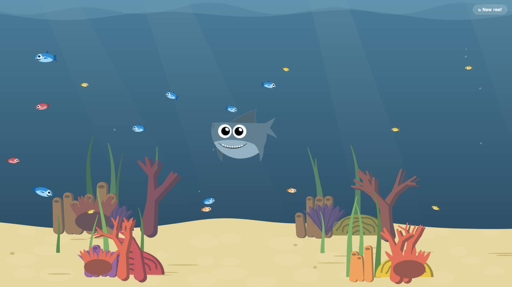

Hosting Fish Slop
The Fish Slop saga: 1. Hosting Fish Slop · 2. Mugging the mugger · 3. Overachiever · 4. Friendly Competition
I set out to build something soothing. Within the hour I'd made myself the shark, and I was dragging him across a coral reef to terrorize the fish.
Then I wanted to share it with the world — but that came with troubles.
Something cute, something soothing
I'd been playing with Remotion — a tool for building videos in code instead of in a video editor — and I got that itch you get when a toy is more fun than the work. Why not point the AI at something with no purpose at all? Something cute. Something calming. A fish tank you could stare at.
So I asked for one. A single web page, one file, an underwater scene in a soft cartoon style. Fish drifting through coral. Light rippling on the sand. The kind of thing that asks nothing of you.
And then, because apparently I can't leave a calm thing calm, I asked for one more feature: if you move your cursor near a fish, it should get startled and dart away.
That was the first crack in the soothing.
Parallel work on the reef
I didn't ask for the scene to be built. I asked for it to be built by three workers at once.
One would paint the water — the gradient of the deep, the shafts of light, the caustics wobbling on the sand floor. (Caustics are those wavering bright nets of light you see at the bottom of a swimming pool.) A second would grow the coral, procedurally — meaning it isn't drawn once and copied, it's generated from a seed number — a starting number that drives the randomness — so every reef is a little different. A third would populate it with fish that actually behave: swim into a coral to hide, linger, swim back out.
The three ran in parallel, each handed the same one-page contract so their work would stack into a single picture: water in the back, coral behind, fish in the middle, coral in front. Ten minutes later I had underwater.html — one self-contained web page, seventeen fish across four species, a six-strong flock of yellow tangs, and light moving on the sand.
It was genuinely lovely. So of course I ruined it.
Me, myself, the shark, and I
The reference image I'd handed the AI was one I already had lying around: a cartoon shark, my own avatar, left over from the Remotion project. I asked for two things. Make the blue fish a more vibrant blue. And put the shark in.
The shark wasn't going to just float there. It enters from a random edge every ten seconds or so, cruises across at some depth, and leaves. And any fish that strays in front of its snout panics and bolts. The little ones and the big ones alike; nobody's brave in front of the shark.
The AI wanted to show me the shark, so it tried to take a screenshot — and kept sending me an empty reef. No shark. It'd try again. Still no shark. I sat there watching it fail and threw out my one guess: maybe the shark's being drawn behind something, hidden under the coral or the water.
That wasn't it. It didn't help. The real reason was timing: the screenshot fires about a second after the page loads, and the shark only swims in every ten seconds — so every shot caught the gap between visits. In the end the AI forced a shark to appear dead-center in a throwaway copy of the page, just to prove the drawing worked, then sent me the proof:

"Your shark, mid-cruise in the scene."
I watched it cross a few times for real. Then I had the idea that turned soothing into gleeful.
"Can you make it so I can drag the shark?"
So now you can. Grab him with the cursor, and he eases after your pointer like he's being pulled through water, flipping to face wherever you drag. And every fish within range scatters in pure panic the entire time you hold him. Let go, and he settles at that depth and goes back to his patrol as if nothing happened.
I was done — my very own reef, where I'm the shark. But I wanted to share it…
The artifact was dead in the water
And this is where the actual work of the afternoon started — not the building, the sharing.
The AI had already handed me a link: a Claude artifact, which is a little hosted web page the AI can publish for you on the spot. Perfect, except for one thing. My work account's artifacts are company-only. Anyone outside the company clicks the link and gets a locked door.
I wanted a free, public link. Ideally with no new accounts, no sign-ups, nothing to cancel later. Just a URL I could paste to a friend that shows a reef full of fish.
Simple ask. It took three tries to get right, and each of the first two looked like it worked.
Deeper waters ahead
The first idea was clever, and I already had the tools for it. Drop the file into a GitHub gist — a public scratchpad for a snippet of code — and serve it through a free relay — an adapter that turns that raw file into a web page a browser can actually open.
Posting that gist reaches out onto the open internet — and a tiny Claude rides on the big one's shoulder, watching for exactly that. It wouldn't let the AI post the gist itself. So the AI wrote out the command, ready to run, and asked me to paste it in and fire it myself.
It worked. The reef came up. But first-time visitors hit a gate: a "one more step, click here to continue" page the relay shows before it'll load mine. That screen is there for a reason — a free relay that served any file instantly would be a scammer's dream. Fair enough. It also means the link isn't something I can just hand a friend and watch the fish appear.
So we tried a second free relay over the same gist. This one served the page directly. No gate. Done.
I didn't even share it. I clicked the link myself. But…
It doesn't load
The relay was free. Free came with a catch: it loaded slowly. Painfully slowly. I clicked, and I waited, and the reef would eventually surface — long after any normal person would have closed the tab.
I don't have that kind of patience, and neither would anyone I handed the link to. So I turned back to the AI to ask for a different option.
I didn't get to finish the question. It had already named the fix: GitHub Pages.
Works perfectly
GitHub Pages was the least clever option on the table, which is how these usually end. Put the same file in its own little repository — a project folder stored on GitHub — and let GitHub publish it from its own servers: no relay in the middle, no gate, no waiting for a sleeping service to wake up.
Creating that repository and pushing it out was another reach into the outside world, so tiny Claude spoke up a second time: the AI drafted the command again and asked me to paste it in, and I did. Then it took over — switched GitHub Pages on, kept checking the address until it went live, and opened it once more to confirm the fish were swimming.
I checked the link again.
Worked perfectly.
The reef now lives at scriptease.github.io/underwater-reef — fast, permanent, free, and open to anyone. Same seventeen fish. Same shark. Go drag him around and watch the reef scatter.
What the fish taught me
The building was the easy afternoon. Three workers, ten minutes, and I had a reef. The making almost isn't the bottleneck anymore.
The sharing was the hard afternoon. What fought me wasn't a bug or an error page. It was a definition. "Free hosting" hid a long wait behind a link that looked identical to a working one.
Every automated check said it worked. The AI screenshotted the reef swimming on the public URL, its own checks came back green. The page still didn't open when I clicked it myself.
A good artist always checks their own work. Now that includes checking the AI's work.
Steal this reef
Here's my prompt — dictated and all, with my avatar attached:
Hi. I want you to create a single page HTML, and I want you to generate
realistic, cutoony underwater scene. And I want you to spin up three
separate agents, one to build the water and wave and light reflection on
the sand at the bottom, one to generate procedurally the Corel Reefs in
the background and small corals in the foreground, and I want fish to
swim in and out of the corals. And I want the mouse cursor or touch to
affect the fish so that they move away if you disturb them. And for the
style, I want you to use a similar style as this image.
And here's the second one, to make it my own:
This looks great just one change. Can you make the fish that look
exactly like the image that I paste it more vibrant blue, and add the
shark from my sample image. And the fish should swim away if the shark
looks at them
Ah an idea can we test that you can drag the shark?